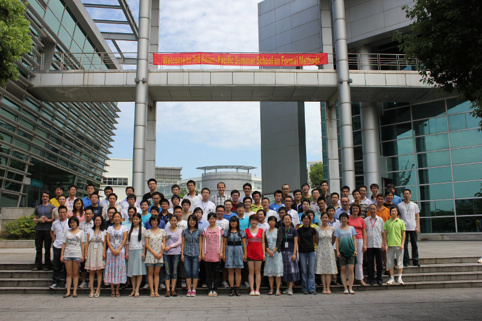

Research intern at Microsoft Research Asia
Wireless and Networking Group
- Director: Wenjun Hu
- Time: Oct. 2012 - Jan. 2013
- Location: Beijing, China
Smooth Transmission over Unsychronized VLC Links: use rateless coding to achieve fast and stable visual link communication.
Student intern at Carnegie Mellon University
CyLab, ECE Department
- Director: Patrick Tague
- Time: June. - Sept. 2012
- Location: Moffett Field, CA, USA
Working in wireless network & system security group, I mainly focused on an environmental anomaly detection platform and a human behavior pattern detection project.
RedFlag Linux Developer Conference, 2012
- Time: Mar. 31
- Location: Beijing, China
TODO: PICS..
HPC-IN-FINANCE, 2011
- Time: Oct. 24 - Oct. 28, 2011
- Team member: Hao Gu, Tao Wu
We use a mathematical model to evaluate and predict economy decisions, through an implementation of a parallel-computing structure.
Software Freedom Day (Hefei), 2011
- Time: Sept 17, 2011
- Location: USTC, Hefei
Held by USTC-LUG, Software Freedom Day is concerning topics about freedom software and their users. I gave speech in the activity.
3rd Asia-Pacific Summer School on Formal Methods
- Time: Aug. 12 - Aug. 21, 2011
- Location: Suzhou, China
- Topics:
- Verification of programs, algorithms or protocols.
- Programming language semantics
- Formalization of logical systems or mathematical concepts in a mechanized logic
- Experiences on using proof assistants in education or research projects
- New development and contributions of proof assistants, including theories, tactics, libraries, interfacing different verification systems, etc.

Chinese University Service Outsourcing Innovation Application Competition, 2011
- Location: Wuxi, China
- Team member: Hao Gu, Qing Ye, Yanjing Zhang
- Projects:
- JinYinBao: a paper gold/silver transation system.
- Android client for this system
Third Prize.
Robogame 2010
- Time: July 2010 - Oct. 2010
- Location: Hefei, China
Robogame 2010 is a competition focused on robot techniques. We built a robust and agile robot to solve Rubik’s Cube and won a championship in the contest. Our best result is 39 seconds.